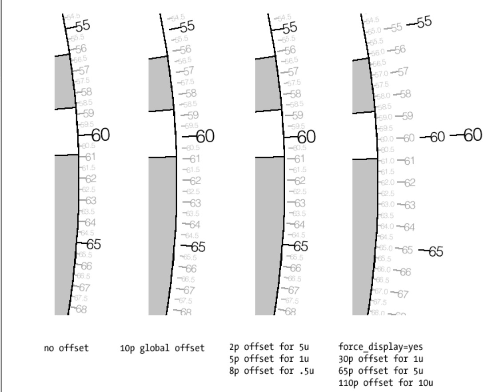
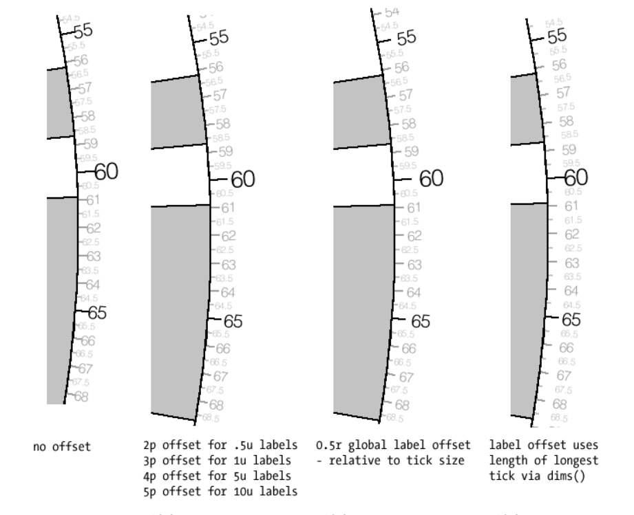
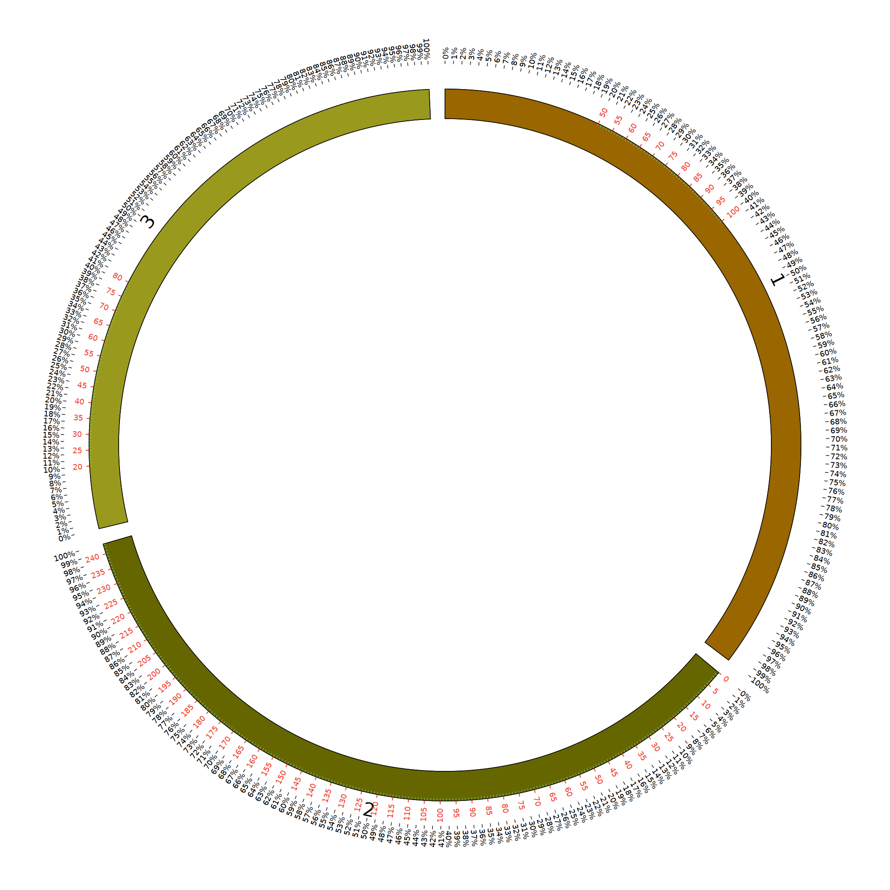

从图片当中可以看到，三条染色体上出现了ticks
它们出现的位置也并不是从开始到结尾的
- 首先使用show_ticks和show_tic_labels参数控制tick的有无
- 在tick的父标签ticks中定义了全局变量；并且可以在子标签中被继承和修改
- chromosomes_display_default=no参数可以对每条染色体是否显示tick；以及显示的范围进行人为的设定
接下来让我们看看子标签tick中的内容是怎么样的
上面的内容上我们也可以发现，这和ideogram标签中对chromosomes的设置几乎是差不多的
通过 chromosomes_display_default和chromosomes参数控制目标的范围
orientation=in/out 表示显示的方向啦，out就朝外；in朝里；反正radius是可以调整它显示的位置的
使用offset 和label_offset参数调整ticks位置


offset
label_offset
从图片上可以很明显的看出这两个参数的作用
关于grid的介绍

同样，grid的显示和ideogram上的tick是一样的
- 参数show_grid=yes在ticks标签外控制grid的显示
- 使用grid_start grid_end控制显示的位置
- 在ticks父标签中的grid可以被thic继承，不过需要在tick标签中使用 grid=yes参数
接下来是关于tick之间间隔是绝对距离还是相对距离啦

从图中可以发现我把每一段染色体分成了100份的相对长度；然后定义每一个1%为单位长度，在上面打上label标签
- 使用 rspacing spacing_type两个参数定义为相对长度类型
- show和show_label进行展示
- label_relative当然也很重要
- rmulitiplier则是让每个单位是0.01的值乘上100
- 最后就是后缀suffix啦！